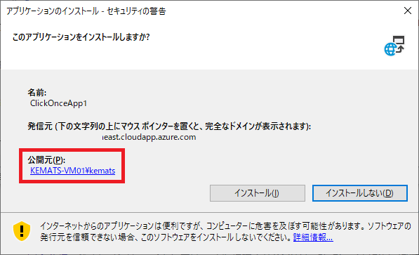
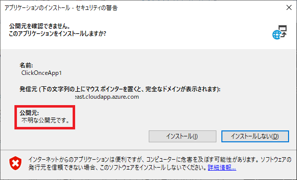
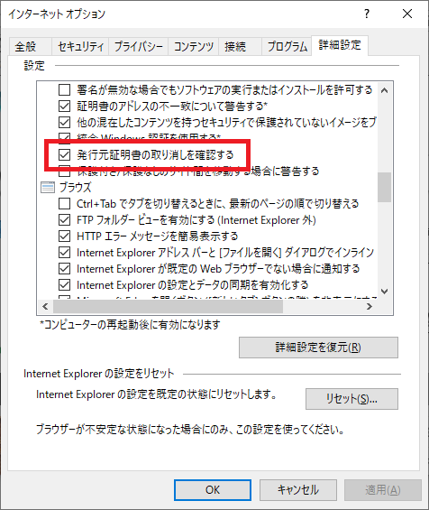
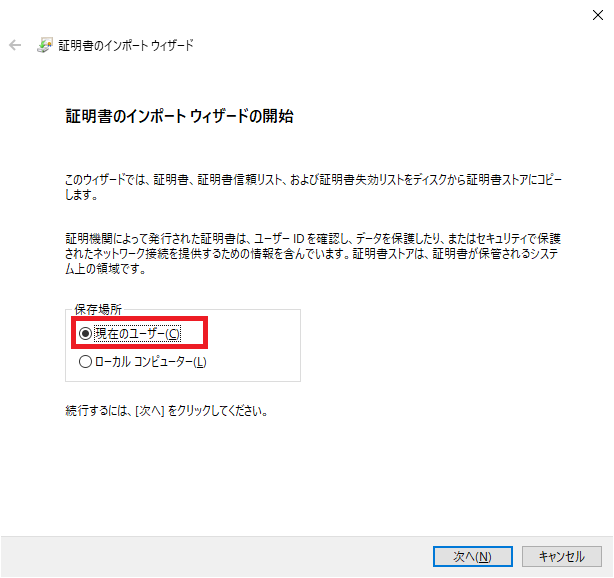
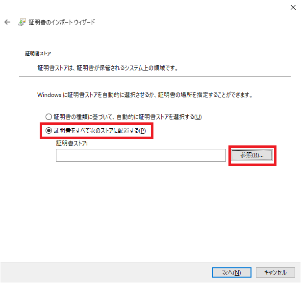
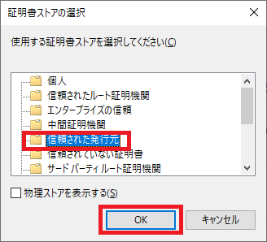
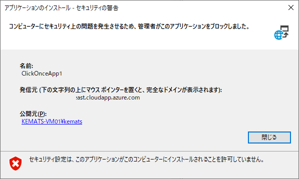

こんにちは、Japan Developer Support Core チームの松井です。
今回は、ClickOnce アプリケーションのインストール時に表示される信頼プロンプトで、公開元が “不明な公開元” として表示される場合の想定される原因と対処方法をご案内します。
ClickOnce 信頼プロンプトとは
信頼プロンプトは、ClickOnce アプリケーションをインストールする際に、アプリケーション名や発信元、公開元などを表示してインストールして問題ないかユーザーに確認を求める次の図ようなダイアログです。

信頼プロンプトの公開元はアプリケーションの署名に基づいて表示されますが、次の図のように “不明な公開元” として表示される場合があります。

不明な公開元として表示される原因と対処方法
結論から述べると “不明な公開元” は何らかの理由でアプリケーションの署名の有効性が検証できない場合に表示されます。よくある原因とそれぞれの対処方法を紹介します。
ユーザーが利用しているコンピューターにルート証明書がインストールされていない
署名の検証では、署名に使用された証明書の発行元を辿り、信頼されたルート証明機関まで辿れるかどうかが確認されます。信頼されたルート証明機関の証明書 (ルート証明書) はあらかじめコンピューターにインストールしておく必要があり、インストールされていない場合はアプリケーションが正当な証明機関によって発行された証明書で署名されていることが確認できないため “不明な公開元” となります。
インターネットに接続されているコンピューターでは、信頼されたルート証明書プログラム を通じて自動的にルート証明書がインストールされます。そのため一般的な証明書発行機関から入手された証明書であれば、通常ルート証明書はインストール済みであることが想定できます。注意が必要な状況は、アプリケーションの署名に自己署名証明書を使用している場合と、組織内で運用されている独自の認証局から発行された証明書を使用している場合です。自己署名証明書については、アプリケーションがインターネット上で公開されるものかどうかに関わらず、正式なアプリケーションで利用するべきではありません。組織内の認証局から発行された証明書については、インターネット上で公開されるアプリケーションの署名に利用することは一般的に適していませんが、イントラネット内で利用する場合は事前に証明書を配布して信頼されたルート証明機関のストアにインストールするか、グループ ポリシーなどでクライアント コンピューターにルート証明書を配布してください。
署名に使用した証明書の有効期限が切れておりタイムスタンプも付与されていない
証明書には有効期限があり、有効期限が切れている場合は署名は無効なものとして扱われるため “不明な公開元” となります。ただし、タイムスタンプが付与されている場合は、タイムスタンプが有効であれば有効期限を過ぎていても署名時には有効な証明書であったことが確認できるため、証明書は受け付けられます。タイムスタンプが付与されていない場合は直ちに新しい証明書でアプリケーションを署名して再発行する必要があるため、ClickOnce アプリケーションを常にタイムスタンプ付きで署名して発行することをお勧めします。
失効確認に必要なインターネット アクセスがない
証明書は、その有効期限内であっても秘密鍵の漏洩や証明書に記載した事項の変化などがあった場合、その証明書が利用できないように失効されます。証明書の失効は、証明書の記載内容に基づいてインターネット上の CLR 配布ポイントから失効情報を入手したり OCSP レスポンダへ問い合わせることで確認が行われます。インターネットに接続できない場合、証明書の失効状態が確認できず署名が有効でない可能性があるため、”不明な公開元” となります。
この場合、証明書の CLR 配布ポイントや機関情報アクセスのフィールドに記載されている URL へアクセスできるようにプロキシー サーバーやファイア ウォールを構成し、失効確認が正常に行える状態とすることが理想的です。ただし、そもそもインターネットに接続していないといった状況などでアクセスが許可できない場合は、インターネット オプションで [発行元証明書の取り消しを確認する] のチェックを外すことで ClickOnce アプリケーションの署名の失効確認を行わないようにすることが可能です。失効確認の影響かどうかを判断するための切り分けの手段としても、一時的に失効確認を行わない設定にすることが有効です。

EV コード署名証明書による署名を行っている
EV コード署名証明書による ClickOnce アプリケーションの署名は Visual Studio 2015 以降で対応されました。以前のバージョンの Visual Studio を利用した場合、アプリケーションの発行時にエラーは発生しませんが署名が不正な状態となります。この場合、署名の検証に失敗して “不明な公開元” となります。EV コード署名証明書を利用する場合は、Visual Studio 2015 以降のバージョンをご利用ください。
また、EV コード署名証明書によるアプリケーションの署名を検証するためには、.NET Framework 4.6 以降が必要です。ユーザーが利用している .NET Framework のバージョンが 4.6 未満の場合は署名の検証に失敗して “不明な公開元” となります。この場合は、.NET Framework 4.6 以降をインストールしてください。
EV コード署名証明書を使用した ClickOnce アプリケーションのマニフェスト署名について の記事も併せてご確認ください。
いずれにも当てはまらない場合
上記では一般的な例を挙げましたが、いずれにも当てはまらない場合は発生している事象について個別に詳細な調査が必要ですので、弊社のサポートへお問い合わせください。
補足1: ClickOnce 信頼プロンプトを表示させない方法
信頼プロンプトはアプリケーションの署名が検証でき公開元が正当であることが確認できる場合でも表示されます。信頼プロンプトを表示させないためには、アプリケーションをインストールするユーザーが事前に証明書を [信頼された発行元] ストアにインストールしておく必要があります。
証明書をインポートする手順はいくつかありますが、エクスプローラーで証明書ファイル (*.cer や *.crt など) をダブルクリックして証明書のインポート ウィザードを起動し、ウィザードの指示に沿って証明書のインストール作業を進める手順が簡単です。
(1) エクスプローラーで証明書ファイル (*.cer や *.crt など) をダブルクリックします。
(2) 証明書ダイアログが起動しますので、[証明書のインストール] ボタンを押下します。
(3) 証明書のインポート ウィザードが起動しますので、[現在のユーザー] を選択して [次へ] ボタンを押下します。

(4) インストール先の証明書ストアの選択が求められるので、[証明書をすべて次のストアに配置する] を選択して [参照] ボタンを押下します。

(5) 証明書ストアの選択ダイアログが表示されますので、[信頼された発行元] を選択して [OK] ボタンを押下します。

(6) インポート ウィザードに戻りますので [次へ] ボタンを押下します。
(7) ウィザードで指定した内容が表示されますので内容に相違がないことを確認し、[完了] ボタンを押下します。
手順は以上になります。
補足2: ClickOnce 信頼プロンプトを無効にする方法
信頼プロンプトはレジストリの設定で無効化することが可能です。信頼プロンプトを表示する目的はユーザーにインストール可否の確認を求めることですので、無効にした場合は信頼プロンプトが表示されなくなり、信頼された発行元のアプリケーション以外はインストールできなくなります。信頼プロンプトを無効にした状態で信頼された発行元アプリケーション以外のインストールを試みた場合、次の図のように [インストール] ボタンが表示されません。

この機能は、ドメインやコンピューターの管理者によってあらかじめ許可された発行元以外の ClickOnce アプリケーションがユーザーによってインストールされることを禁止したいといった場合に便利です。セキュリティ ゾーン毎の既定値や設定の詳細などは以下のドキュメントでご案内していますのでこちらをご確認ください。
参考: 方法: ClickOnce 信頼プロンプトの動作を構成する
なお、一部のサードパーティ製のアプリケーションやツールは、インストールやアプリケーションの動作の過程で信頼プロンプトを無効にする場合があります。意図せず信頼プロンプトが無効化され [インストール] ボタンが表示されなくなった場合は、レジストリの設定を変更するか、証明書を信頼された発行元ストアにインストールしてください。また、少なくとも本記事の執筆時点で .NET Framework のアップグレードや更新プログラムの適用によって信頼プロンプトの設定が変更されることはありませんので、意図せず変更された場合はインストールされているアプリケーションやツールの影響がないか確認してください。
本ブログの内容は弊社の公式見解として保証されるものではなく、開発・運用時の参考情報としてご活用いただくことを目的としています。もし公式な見解が必要な場合は、弊社ドキュメント (https://learn.microsoft.com や https://support.microsoft.com) をご参照いただくか、もしくは私共サポートまでお問い合わせください。